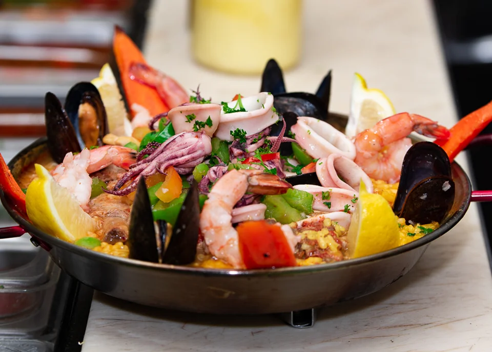
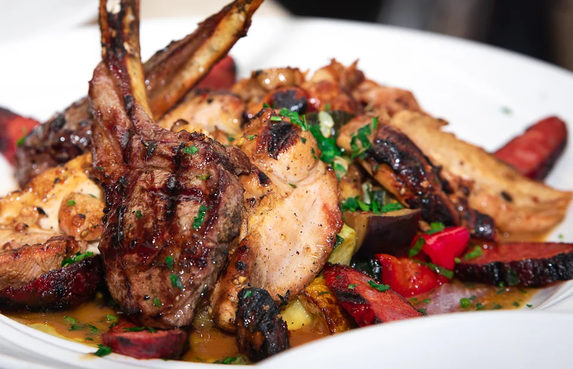
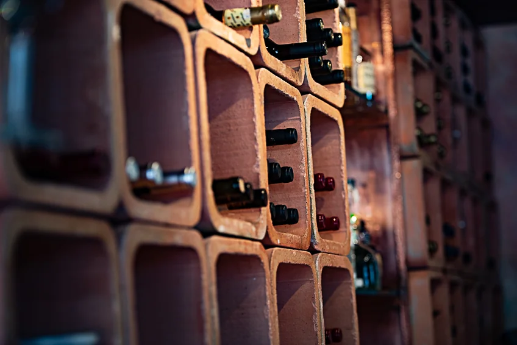

Bodega Española
Tapas.
Vino.
Sobremesa.
Spanish plates. A bottle to share.
A very good reason to stay a little longer.

Bodega Española
Spanish plates. A bottle to share.
A very good reason to stay a little longer.
Life happens around a table.
The conversation that keeps going
long after the plates are cleared.
Start with a few tapas. Pass around the paella. Let the next glass turn into the next story. That’s our kind of evening.
Get to know the bodega
From the first tapa
to the last drop.

The painted ceramics. The well-stocked wine shelves. The little details worth looking up for.
There’s plenty to take in between courses.
Take a look around
1800 L Street
Midtown Sacramento, CA 95811
For a table, a question, or a special occasion,
give us a call.